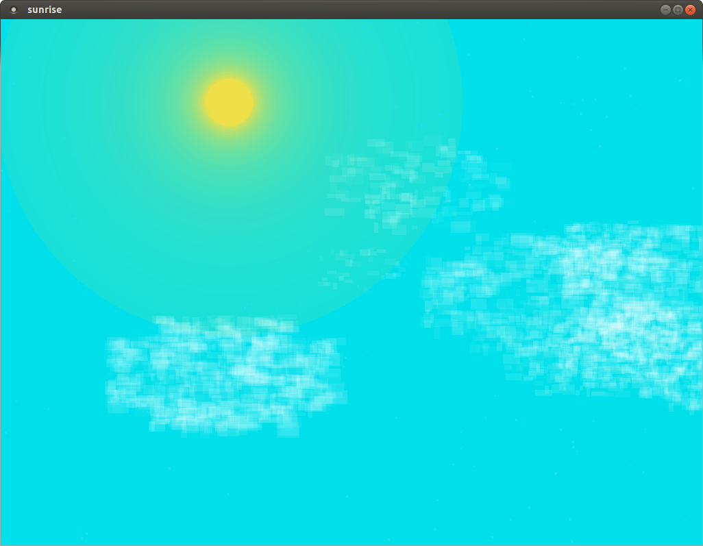

A retro style scrolling arcade game made solely with FLTK.
Extend FLTK with animated GIF functionality.

Write short FLTK programs with immediate feedback.

FLTK starfield simulation demo
Show off FLTK's performance and simplicity with a nice to watch demo.
Another "nice to watch" FLTK drawing demo...

A minimal implementation of the "5 in a row" game using FLTK.